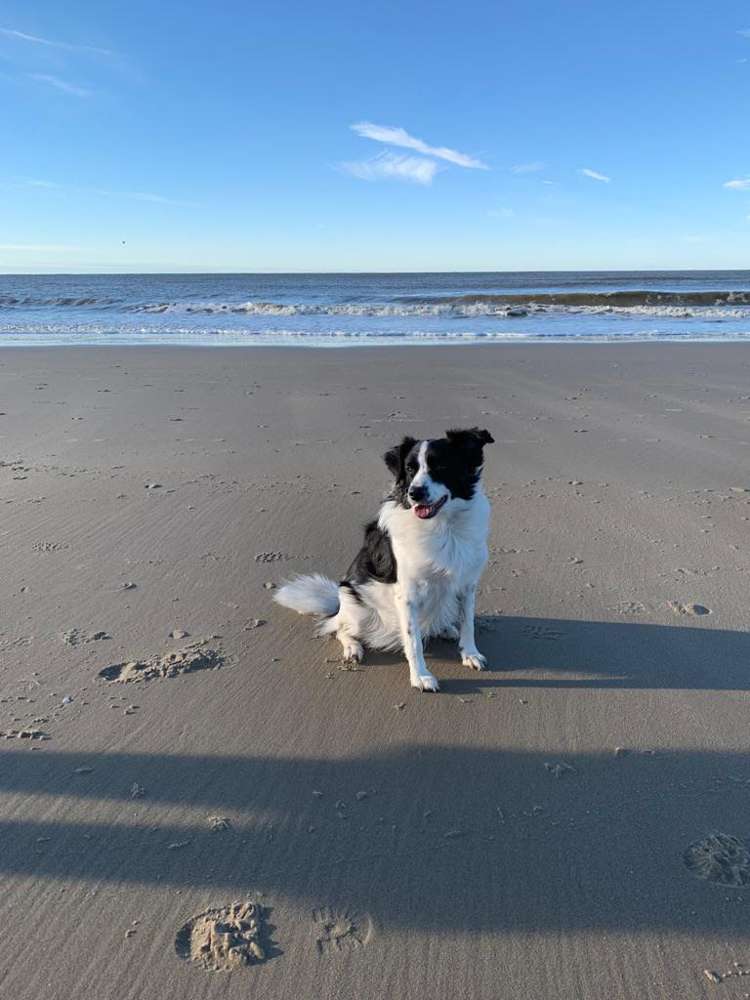

Hello there! My name is Demi Kraakman and I'm 22 years old. I used to live in a small town close to Alkmaar but I recently moved to Leiden to study my master at Leiden University.
Before doing this master, I did my bachelor English Language and Culture at University of Amsterdam.
In my free time, I'm usually either reading or writing, or procastinating doing either of those things by accidentally going down a rabbit hole on TikTok. If I'm not inside entertaining myself with those things, I'm usually taking long walks with my adorable dog Luna.

Since I mentioned reading, I figured I'll include a list of books I've recently read:
| Prior Knowledge | Close to None-Existant |
| Expectations | I'm not entirely sure what to expect but I reckon that if I take this one step at a time that it might be more doable than I thought. |